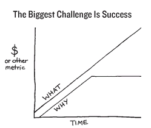

12
SPLIT HAPPENS
Wal-Mart started small. So did Microsoft. So did Apple. So did General Electric and Ford and almost every other company that made it big. They didn’t start by acquisition or spin-off, or achieve mass scale overnight. Nearly every company or organization starts the same way: with an idea. No matter whether an organization grows to become a multibillion-dollar corporation like Wal-Mart or fails in the first few years, most of them started with a single person or small group of people who had an idea. Even the United States of America started the same way.
At the beginning, ideas are fueled by passion—that very compelling emotion that causes us to do quite irrational things. That passion drives many people to make sacrifices so that a cause bigger than themselves can be brought to life. Some drop out of school or quit a perfectly good job with a good salary and benefits to try to go it alone. Some work extraordinarily long hours without a second thought, sometimes sacrificing the stability of their relationships or even their personal health. This passion is so intoxicating and exciting that it can affect others as well. Inspired by the founder’s vision, many early employees demonstrate classic early-adopter behavior. Relying on their gut, these first employees also quit their perfectly good jobs and accept lower salaries to join an organization with a 90 percent statistical chance of failing. But the statistics don’t matter; passion and optimism reign and energy is high. Like all early adopters, the behavior of those who join early says more about them than it does about the company’s prospects.
The reason so many small businesses fail, however, is because passion alone can’t cut it. For passion to survive, it needs structure. A WHY without the HOWs, passion without structure, has a very high probability of failure. Remember the dot-com boom? Lots of passion, but not so much structure. The Titans at Endicott House, however, did not face this problem. They knew how to build the systems and processes to see their companies grow. They are among the statistical 10 percent of small businesses that didn’t fail in their first three years. In fact, many of them went on to do quite well. Their challenge was different. Passion may need structure to survive, but for structure to grow, it needs passion.
This is what I witnessed at the Gathering of Titans: I saw a room full of people with passion enough to start businesses, and with knowledge enough to build the systems and structures to survive and even do very well. But having spent so many years focused on converting a vision into a viable business, many started to fixate on WHAT the organization did or HOW to do it. Poring over financials or some other easily measured result, and fixating on HOW they were to achieve those tangible results, they stopped focusing on WHY they started the business in the first place. This is also what has happened at Wal-Mart. A company obsessed with serving the community became obsessed with achieving its goals.
Like Wal-Mart, the Endicott entrepreneurs used to think, act and communicate from the inside out of The Golden Circle—from WHY to WHAT. But as they grew more successful, the process reversed. WHAT now comes first and all their systems and processes are in pursuit of those tangible results. The reason the change happened is simple—they suffered a split and their WHY went fuzzy.

The single greatest challenge any organization will face is . . . success. When the company is small, the founder will rely on his gut to make all the major decisions. From marketing to product, from strategy to tactics, hiring and firing, the decisions the founder makes will, if he trusts his gut, feel right. But as the organization grows, as it becomes more successful, it becomes physically impossible for one person to make every major decision. Not only must others be trusted and relied upon to make big decisions, but those people will also start making hiring choices. And slowly but surely, as the megaphone grows, the clarity of WHY starts to dilute.
Whereas gut was the filter for early decisions, rational cases and empirical data often serve as the sole basis for later decisions. For all organizations that go through the split, they are no longer inspired by a cause greater than themselves. They simply come to work, manage systems and work to reach certain preset goals. There is no longer a cathedral to build. The passion is gone and inspiration is at a minimum. At that point, for most who show up every day what they do is just a job. If this is how the people on the inside feel, imagine how those on the outside feel. It is no wonder that manipulations start to dominate not only how the company sells its wares, but even how they retain employees. Bonuses, promotions and other enticements, even instilling fear in people, become the only way to hold on to talent. That’s hardly inspiring.
This diagram depicts the life of an organization. The top line represents the growth of WHAT the organization does. For a company, that measurement is usually money—profits, revenues, EBITA, share price or growth in market share. But the metric can be anything, depending on what the organization does. If the organization rescues lost puppies, then the metric would be the number of puppies successfully rescued. It is inherently simple to measure the growth of WHAT an organization does. WHATs, after all, are tangible and easy to count.
The second line represents the WHY, the clarity of the founding purpose, cause or belief. The goal is to ensure that as the measurement of WHAT grows, the clarity of the WHY stays closely aligned. Put another way, as the volume of the megaphone increases, the message traveling through it must stay clear.
The volume of the megaphone comes solely from growth of WHAT. As this metric grows, any company can become a “leading” company. But it is the ability to inspire, to maintain clarity of WHY, that gives only a few people and organizations the ability to lead. The moment at which the clarity of WHY starts to go fuzzy is the split. At this point organizations may be loud, but they are no longer clear.
When organizations are small, WHAT they do and WHY they do it are in close parallel. Born out of the personality of the founder, it is relatively easy for early employees to “get it.” Clarity of WHY is understood because the source of passion is near—in fact it physically comes to work every day. In most small businesses all the employees are all crammed into the same room and socialize together. Simply being around a charismatic founder allows that feeling of being a part of something special to flourish. Although there may be some efficiencies to be gained, for small businesses that are perfectly comfortable staying small, the need to articulate the WHY is not as important. For organizations that want to pass the School Bus Test, to become billion-dollar organizations or work at a scale large enough to shift markets or society, the need to manage through the split is paramount.
The School Bus Test is a simple metaphor. If a founder or leader of an organization were to be hit by a school bus, would the organization continue to thrive at the same pace without them at the helm? So many organizations are built on the force of a single personality that their departure can cause significant disruption. The question isn’t if it happens—all founders eventually leave or die—it’s just a question of when and how prepared the organization is for the inevitable departure. The challenge isn’t to cling to the leader, it’s to find effective ways to keep the founding vision alive forever.
To pass the School Bus Test, for an organization to continue to inspire and lead beyond the lifetime of its founder, the founder’s WHY must be extracted and integrated into the culture of the company. What’s more, a strong succession plan should aim to find a leader inspired by the founding cause and ready to lead it into the next generation. Future leaders and employees alike must be inspired by something bigger than the force of personality of the founder and must see beyond profit and shareholder value alone.
Microsoft has experienced a split, but is not so far down the line that it can’t be put back on track. There was a time not too long ago that people at Microsoft showed up at work every day to change the world. And they did. What Microsoft achieved, putting a PC on every desk, dramatically changed the way we live. But then their WHY went fuzzy. Few people at the company today are instructed to do everything they can to help people be more productive so that they can achieve their greatest potential. Instead, Microsoft became just a software company.
If you visit Microsoft’s headquarters in Redmond, Washington, you will find that although their WHY has gone fuzzy, it is not lost. That sense of a cause, that desire to change the world again, is still there, but it has become unfocused, wrapped up in HOW and WHAT they do. Microsoft has a remarkable opportunity to clarify their WHY and regain the inspiration that took them to where they are today. If they do not, if all they do is manage the WHAT and continue to ignore the WHY, they will end up looking like America Online, a company so far past the split that their WHY is indeed lost. There is barely a hint of the original WHY left anymore.
America Online used to inspire. Like Google today, it was the hot company to work for. People clamored to move to Virginia to work for this amazing company that was changing the rules of business. And it was true that, like all inspiring companies, AOL set in motion changes that profoundly altered how we do almost everything. They inspired a nation to get online. Their cause was clear and their decisions were governed by their WHY. Their goal was to get more people online, even if their decisions in pursuit of that goal wreaked havoc on their business in the short term. With their WHY in focus, AOL pulled ahead of their competition by deciding to change from hourly pricing for Internet access to unlimited monthly pricing, a decision that created so much traffic it shut down their servers. Given the impact, the decision was neither practical nor rational, but it was the right choice to help bring their cause to life. That their systems shut down with the additional traffic only pushed them to work harder to cope with it, to ensure that America could, in fact, get and stay online.
In those days, having an AOL e-mail address was a point of pride—a sign of being one of those who was a part of the Internet revolution. These days, still having an AOL e-mail address is a symbol of having been left behind. That the meaning of something as simple as @aol.com has changed so dramatically is additional proof that the company’s cause has long since departed. Absent a clear WHY, size and momentum are all AOL has to keep them going. The company is not inspiring anymore, not to those who work there and not to those on the outside. We don’t talk about them like we used to and we certainly don’t feel the same way about them either. We don’t compare them to Google or Facebook or any of the other industry-changing companies of today. Like a massive freight train with brakes applied, it will still take miles for this train to come to a complete stop. It’s simple physics. At best AOL’s size will help them putter along, but without a more compelling purpose, cause or belief, the company is simply a collection of stuff. It will probably end up being chopped up and sold off for scrap (technology or customers), which is a sad reality considering how inspiring AOL used to be.
It is not a coincidence that successful entrepreneurs long for the early days. It is no accident that big companies talk about a “return to basics.” What they are alluding to is a time before the split. And they would be right. They do indeed need to return to a time when WHAT they did was in perfect parallel to WHY they did it. If they continue down the path of focusing on their growth of WHAT at the expense of WHY—more volume and less clarity—their ability to thrive and inspire for years to come is dubious at best. Companies like Wal-Mart, Microsoft, Starbucks, the Gap, Dell and so many others that used to be special have all gone through a split. If they cannot recapture their WHY and reinspire those inside and outside their organization, every one of them will end up looking more like AOL than the companies they were.